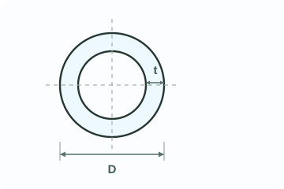
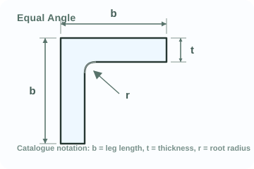
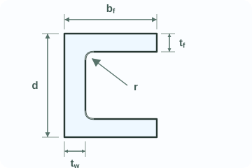
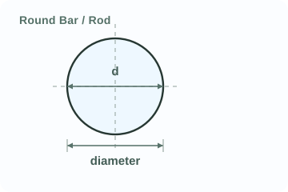

Threads intercept shear plane · AS 4100 Cl. 9.2.2.1
SC Handbook engineering tools
Bolted connections · AS 4100 Cl. 9.2
Bolt Capacity
Selected bolt basisM24 8.8/SN: threads intercept shear plane · X: threads clear of shear plane
- df
- 24 mm
- As
- 353 mm²
- Ac
- 324 mm²
- Ao
- 452 mm²
- fuf
- 830 MPa
- Nti
- Not required
Minimum installed bolt tension, NtiAS 4100 Table 15.2.2.2 · M16-M36+
/TB and /TF fully tensioned categories use the tabulated minimum installed bolt tension.
| Bolt size | Property class 8.8 | Property class 10.9 |
|---|---|---|
| M16 | 95 kN | 130 kN |
| M20 | 145 kN | 205 kN |
| M24 | 210 kN | 295 kN |
| M30 | 335 kN | 465 kN |
| M36 | 490 kN | 680 kN |
AS 4100 Table 15.2.2.2. Nti is an installation preload, not the design tensile capacity φNtf.
RESULTS
design capacities per boltBolt capacities
AS 4100 Cl. 9.2.2.2
Selected N-plane capacity · krd = 1.00 · kr = 1.00.
Detailed connection checksBolt group, connected plies, integrity, detailing and project actions+
Bolt group and shear planes
Design shear capacity · bolt group266.8 kN2 bolts × 1 N plane per bolt = 2 total shear planes.
Connected plies and detailing
Shared bolt-hole geometryApplies to each active connected ply.
Primary ply properties apply to both connected plies.
Primary ply
Automatic: ae,end = 41.0 mm; ae,pitch = 46.0 mm; end edge governs.
Second ply
Automatic: ae,end = 41.0 mm; ae,pitch = 46.0 mm; end edge governs.
Design bearing capacity · full-bearing limit566.8 kNBolt group · both plies identical · 283.4 kN per bolt × 2 bolts
Design bearing capacity · edge tear-out limit302.6 kNBolt group · both plies identical · 151.3 kN per bolt × 2 bolts
Design bearing capacity governed by edge tear-out limit · both plies identical
The edge tear-out row is the AS 4100 Cl. 9.2.2.4 edge-distance bearing limit. Net-section tension and block shear require the optional integrity check below.
Primary ply302.6 kNEdge tear-out limit
Second ply242.1 kNEdge tear-out limit
Minimum pitch, p AS 4100 Cl. 9.5.1 / mm requiredPASS
Maximum pitch, p AS 4100 Cl. 9.5.3 general limit / mm permittedPASS
Primary ply edge distance, e AS 4100 Table 9.5.2 / mm requiredPASS
Second ply edge distance, e AS 4100 Table 9.5.2 / mm requiredPASS
Connected-ply integrityNot evaluated · optional manual areas+
Primary ply · fuc = 410 MPa
Net-section tensionAS 4100 Cl. 9.1.9(b) and Cl. 7.2
Block shear · governing pathAS 4100 Cl. 9.1.9(e)
Design section tension capacity, φNtIncompleteEnter Ag and An
Design block shear capacity, φRbsIncompleteEnter the governing path areas
Use where Vf* is the axial force transferred through the checked component. Review all plausible paths and enter the governing path areas.
TF slip check
Design slip resistanceNot applicablePer bolt · AS 4100 Cl. 9.2.3.1
Serviceability slip actionsEnter the actions applicable to the slip limit state.
TF slip utilisation ratio—Enter slip actions
Enter serviceability slip actions for the AS 4100 Cl. 9.2.3.3 check.
Project design actions
For axial force transferred in shear, enter |N*| as Vf*, not as bolt tension.
Strength utilisation ratio—Enter design actions
Enter Vf* and/or Ntf* to activate the strength check.
Include prying force in Ntf* where applicable (AS 4100 Cl. 9.1.8).
Calculation basis and limitationsEquations, AS 4100 references and data boundaries+
Issue status · For Review. Clause pages for AS 4100 bolt strength, connected-ply bearing, section tension, block shear and lightweight detailing checks have been visually checked against the local reference PDF; product table values still require project-specific source-register traceability before `Checked` release.
Primary basis · AS 4100 Table 3.4, AS 4100 Table 9.2.2.1 and AS 4100 Table 15.2.2.2; AS 4100 Cl. 7.2, Cl. 9.1.8, Cl. 9.1.9, Cl. 9.2.2, Cl. 9.2.3 and Cl. 9.5.1 to Cl. 9.5.3.
Material standards · Connected ply strengths should be verified against AS/NZS 3678 or AS/NZS 3679.1 as applicable. The default fup = 410 MPa is for AS/NZS 3678 Grade 250 plate from ASI Simple Connections 2020 Table 2.15; use 440 MPa only for a verified AS/NZS 3679.1 Grade 300 flat bar/section or equivalent source. Fastener property class and structural bolt assemblies should be verified against AS 1110 and AS/NZS 1252 as applicable.
Symbols · df is the nominal bolt diameter; dh is the actual hole diameter; e is the hole-centre edge distance used for AS 4100 Table 9.5.2; p is the centre-to-centre pitch of equal holes aligned with the force; Ao is the nominal plain-shank area; Ac is the minor diameter area; As is the tensile stress area. Vsf* and Ntf* in the TF section are the actions applicable to the serviceability slip check.
N/X and category · `/S`, `/TB` and `/TF` identify installation and connection category. N or X identifies the shear-plane condition and is selected separately; TB is not inherently N or X.
Detailing and edge notation · For more than one bolt, pitch is checked against pmin = 2.5df and the general pmax = min(15tp,min, 200 mm), where tp,min is the thinner active connected ply. AS 4100 Cl. 9.5.3(a) and (b) are not applied automatically. The minimum edge-distance check uses e, measured from the critical bolt centre to the selected physical ply edge. For equal holes aligned with the force, Automatic compares ae,end = e - dh/2 + df/2 with ae,pitch = p - dh + df/2. Use Manual for angled edges, corners, non-collinear holes or drawing-derived geometry.
Demand checks · The local hole-bearing ratio assumes concentric shear and equal bolt sharing, with Vb,bolt* = V*/n. Where Vf* represents axial force transferred through the selected component and the optional integrity check is complete, it is also compared with φNt and φRbs. Bolt tension and combined bolt action remain separate checks. `/TF` uses separately entered serviceability slip actions.
Net-section and block-shear areas are user-entered values; the tool does not derive a failure path from connection geometry. Review every plausible path and repeat the check for each critical component. Plate bending, connection-component compression or buckling, drawing-derived tear-out geometry, eccentric bolt-group reactions, overlapping failure paths, prying action, coped-beam tearing, welds, supporting-member local effects and maximum edge distance are not evaluated. Special maximum-pitch cases under AS 4100 Cl. 9.5.3(a) and (b) require separate assessment.
The entered kr is applied to AS 4100 Cl. 9.2.2.1 bolt shear capacity. The reduction is tabulated in AS 4100 Table 9.2.2.1, but the tool does not auto-derive it from connection length lj.
AS 4100 Table 15.2.2.2 gives minimum installed bolt tension Nti only for M16 to M36. Accordingly, M10 and M12 are available only in /S categories in this tool. Nti is installation preload; it is not the design tensile capacity φNtf and is not deducted from that capacity.
As and Ac use metric coarse-thread data. Verify against the applicable fastener and thread Standards before issue for design.
Selected catalogue entryU-bolt product lookupSelect an entry to review its published data.
- Product reference
- -
- Rod size
- -
- Member fit
- -
- Finish
- -
- Supplier
- -
Published dimensions and materialManufacturer-stated ordering information+
Published fit / geometry-
Material / coating-
PRODUCT DATA
Online source onlyManufacturer-published data
No manufacturer-rated load is published for the selected entry.
Catalogue lookup only. No project capacity check is performed.
Basis and limitationsPublished data, design boundary and project checks+
Product basis - Published load, geometry and finish are reported as stated by the manufacturer. Values are not converted to AS 4100 design capacities.
Capacity basis - Working Load or ASD Allowable Load requires a matching manufacturer load condition and compatible project action basis. No action ratio is calculated here.
Code boundary - AS 4100 ordinary bolt provisions apply only to qualifying fasteners and connected steelwork. They do not establish curved U-bolt or complete clamp capacity.
Project design - Check U-bolt and thread strength, leg-force distribution, bend effects, clamp slip and contact, pipe or member local bearing, attachment details, fatigue, corrosion and installation.
Headframe boundary - Mounting-pipe products may be screened. Main headframe-to-monopole clamps remain project-engineered assemblies.
Source - Manufacturer product listing. The displayed status confirms source traceability only, not project suitability.
Welded connections - AS 4100 Cl. 9.6
Weld Capacity
Weld designation6 mm CFW, category SP, f_uw 490 MPaShow weld type, size or throat, category and nominal weld-metal strength on drawings.
- type
- Fillet
- tt
- 4.24 mm
- lw
- 100 mm
- lines
- 2
- φ
- 0.80
s fillet weld leg sizett design throat thicknessaw butt-weld design throatlw effective weld lengthfuw nominal tensile strength of weld metal
Weld symbol legendCommon AS 1101.3 symbol positions; verify project drawings.+
Fillet weld - arrow sideSymbol below the reference line denotes the arrow-side weld.
Fillet weld - other sideSymbol above the reference line denotes the other-side weld.
Fillet weld - both sidesSymbols on both sides of the reference line denote welds both sides.
Complete penetration butt weldDesignation example only; specify preparation, WPS and inspection separately.
Square butt weldBasic butt-weld symbol shown in the arrow-side position.
Single-V butt weldBasic V butt-weld symbol shown in the arrow-side position.
Single-bevel butt weldBasic bevel butt-weld symbol. Confirm the prepared member on the project drawing.
Double-V butt weldV symbols mirrored across the reference line denote both-side preparation.
Incomplete penetration butt weldDesignation example only; specify the required design throat.
SVG schematic redrawn from common AS 1101.3:2005 weld-symbol conventions. Use for quick reference only; project drawings must define size, length, pitch, process, contour, finish, weld category, WPS and inspection requirements where applicable.
Weld selection guideCommon structural-steel use cases and limits.+
AS 4100 Cl. 9.6AS 4100 Table 9.6.3.10AS/NZS 1554.1 WPS / inspectionASI Simple Connections Figure 2.7
RESULTS
per effective weld lineWeld capacity
φ0.6fuwttkr
warning only
Optional screens: parent metal and welded lapWarning-only parent-metal screen and AS 4100 welded-lap kr.+
Design action checkOptional direct shear action and utilisation against total weld capacity.+
Design actionEnter V* only for a direct shear check of this weld set.
—No design action
Capacity view only; verify connected parts, HAZ, eccentric weld groups, fatigue and inspection separately.
Calculation detailsFormula trace, total capacity and warning-only parent-metal screen.+
Formula trace
Calculated values
Total weld capacity kNper-mm capacity x lw x effective weld lines
Calculation basis and limitationsAS 4100 weld capacity, AS/NZS 1554.1 coordination and excluded checks.+
Issue status - For Review. Formula basis is shown; symbol redraws and fabrication requirements remain project-drawing dependent.
Primary basis - AS 4100 Cl. 9.6 welded connections. Fillet-weld throat capacity is calculated as φR = φ0.6fuwttlwkr. An IPBW is evaluated by the fillet-weld method using the entered design throat in accordance with AS 4100 Cl. 9.6.2.7. AS 4100 Table 3.4 supplies the applicable capacity factor.
CPBW - AS 4100 Cl. 9.6.2.7 takes design capacity from the nominal capacity of the weaker joined part multiplied by the appropriate capacity factor. This page therefore reports CPBW capacity as Not evaluated rather than applying a weld-metal throat formula.
Compound weld - AS 4100 Cl. 9.6.5.2 determines design throat from the actual total weld cross-section. The page does not use aw + 0.707s and reports compound-weld capacity as Not evaluated.
Strength data - fuw options follow AS 4100 Table 9.6.3.10(A), also summarised in ASI Simple Connections 2020 Table 2.14.
Effective weld lines - use only for identical effective weld lines acting together, such as both sides of a plate. It is not the number of welding passes.
Welded-lap reduction - kr is from AS 4100 Table 9.6.3.10(B) and applies only when the welded-lap option is selected. The table length lw is in metres.
Parent metal screen - the displayed parent-metal value is an indicative per-mm screen, φ0.6fupt with φ = 0.90. It is warning only and is not the weaker-part CPBW capacity check.
Symbols - AS 1101.3-style examples show arrow-side symbols below the reference line and other-side symbols above it. Verify final symbols on project drawings.
Calculated scope - direct throat-capacity lookup for equal-leg fillet welds and IPBW with a project-specified design throat.
Reference-only scope - CPBW and compound weld types remain available for terminology and detailing guidance but do not return capacity or PASS/FAIL.
Excluded - longitudinal fillet welds in RHS where t < 3 mm, plug and slot welds, weld groups, parent-metal rupture, HAZ, block shear, net-section rupture, joint preparation, backing/gouging, eccentricity, intermittent weld rules, fatigue, seismic detailing, lamellar tearing and inspection acceptance.
Concrete pads · AS 3600:2018 section theory
Concrete Pad Section
SymbolsGeometry and reinforcement depth notation+
b strip widthDtop top padDbot bottom padcnom nominal coveryi mat depth from topdb,⊥ crossing bar
N-bar areas: InfraBuild 500PLUS. Legacy Y bars require verification.
Reinforcement matActiveAuto yiDepth yiBar sizeSpacingfsy
Top pad top mat
Top pad bottom mat
Bottom pad top mat
Bottom pad bottom mat
Bottom pad mats are not applicable while Dbot = 0.
Checked sectionSingle top-pad section · X direction · top compressionDirectional strip capacity; repeat for Y direction.
- bar basis
- -
- b
- -
- D
- -
- calculation
- -
RESULTS
selected stripSection capacity
φ from AS 3600 Table 2.2.2.
Concrete contribution only; no shear reinforcement included
Section capacities only; design actions and excluded checks are not evaluated.
Section analysis schematic
strain and stress block+
Section analysis schematic

Detailed section checksNeutral axis, forces and calculation steps+
Section conclusions
Reinforcement force state
Calculation steps
Calculation basis and limitationsAS 3600:2018 section capacity and stated design boundary+
Primary basis - reinforced concrete ultimate flexural section analysis to AS 3600:2018 Section 8 within the stated scope. The rectangular stress block, linear strain compatibility, steel stress limits and flexural capacity factor are calculated rather than entered.
Two-way reinforcement - this remains a directional strip check. Enter only bars parallel to the selected X or Y direction. The inside auto-depth option places those bars behind one contacting orthogonal crossing-bar layer; repeat the other direction separately or override yi from the reinforcement drawing.
Stress block - α2 and γ are calculated from f'c using α2 = max(0.85 - 0.0015f'c, 0.67) and γ = max(0.97 - 0.0025f'c, 0.67). The f'c input is limited to 20 to 120 MPa.
Capacity factor - for N-class reinforcement in pure bending, this tool calculates φ from kuo using the AS 3600 Table 2.2.2 expression φ = 1.24 - 13kuo/12, limited to 0.65 to 0.85. Legacy Y bars use conservative φ = 0.65 unless actual bar grade and N-class equivalence are verified. Compression-dominant axial-load cases are not implemented.
One-way shear screen - φVu is shown using AS 3600 Cl. 8.2.3.1, AS 3600 Cl. 8.2.4.1 and AS 3600 Cl. 8.2.5.2 only when the simplified-method conditions are satisfied. The page detects f'c or reinforcement fsy outside its limits and then reports Not evaluated. Normal-weight concrete, no prestress, no axial tension, no torsion and maximum aggregate size ≥ 10 mm are fixed project assumptions. Where web crushing limits strength, φ = 0.70 under AS 3600 Table 2.2.2 even when minimum Class N fitments are present.
Ductility limit - where kuo exceeds 0.36, AS 3600 Cl. 8.1.5 imposes additional conditions on analysis, compression reinforcement and restraint; this tool flags the section for engineering review.
Reinforcement basis - current N-bar nominal areas are taken from the InfraBuild Reinforcing Product Guide: N10/N12/N16/N20/N24/N28/N32/N36/N40 = 79/113/201/314/452/616/804/1018/1257 mm2 per bar. The current InfraBuild Class N product range identifies 500 MPa N bars and lists N40 as available on request. Legacy Y bars are retained for old drawings with default fsy = 410 MPa; verify the actual grade, ductility and condition from project records. User-entered fsy above 600 MPa is capped at 600 MPa in the design model.
Section theory - plane sections remain plane; strain is linear; concrete tension is ignored at ultimate; ultimate concrete strain is fixed at εcu = 0.0030; steel stress is calculated from strain and capped at yield.
Neutral axis - x is measured from the selected compression face and solved by axial force equilibrium for pure bending with N* = 0.
Scope - rectangular pad strip only. Results are for the selected directional strip width b; use b = 1000 mm for the usual per-metre capacity. One adopted f'c applies to the whole checked section.
Plain concrete - if no reinforcement mat is active, this tool does not calculate an RC ultimate moment or reinforced-concrete one-way shear capacity. Use a separate plain-concrete footing check to AS 3600 Section 20 where applicable.
Excluded checks - minimum flexural reinforcement, punching shear, base-plate or column bearing, soil bearing, development length, anchorage, bar spacing, crack control, deflection and load combinations.
Pad-on-pad - the checked section is detected automatically. One positive pad depth gives a single-pad section; positive top and bottom pad depths give a composite section with D = Dtop + Dbot and all active mats. Interface shear transfer, anchorage and composite action must be designed and documented separately.
Catalogue and geometric section properties
Section Properties
Selected catalogue section380PFCd = 380 mm; bf = 100 mm; tw = 10 mm; tf = 17.5 mm
- Family
- PFC
- Axes
- Centroidal x-x / y-y
- Basis
- Stated by value
- Source
- InfraBuild 2019
RESULTS
Selected section · mm unitsSection properties
Section basis
Gross section and centroid
Identity, mass, gross area and centroid coordinates.
Catalogue
Catalogue
Catalogue
Derived · catalogue data
Axis properties
Centroidal x-x / y-y properties
Second moments, section moduli and radii about the displayed axes.
| Property | x-x axis | y-y axis |
|---|---|---|
| Second moment of areaI · mm4 | Catalogue | Catalogue |
| Elastic section modulusZ · mm3 | T B Catalogue | R L Catalogue |
| Plastic section modulusS · mm3 | Catalogue | Catalogue |
| Radius of gyrationr · mm | Catalogue | Catalogue |
Section-specific
Torsion, warping and shear references
Only properties applicable to the selected section family are shown.
Catalogue
Catalogue
Catalogue
y mm2
x mm2
Derived · catalogue data
Derived · catalogue data
Axis relationship
Principal-axis relationship
Product of inertia and the relationship between displayed and principal axes.
Zero by symmetry · shown axes are principal
Derived · catalogue data
u
v
Derived · catalogue data
u mm
v mm
Derived · catalogue data
Derived · catalogue data
Geometric ratios — (d−2tf)/tw = 34.5; (bf−tw)/tf = 5.14. No section classification is assigned.
The basis of each value is stated. Missing catalogue properties are not replaced by idealised rolled-section geometry.
Basis of valuesCatalogue values and stated derivations+
Basis of values
Source and limitationsCatalogue source, verification status and exclusions+
Axes — positive horizontal and vertical directions are right and up. Positive rotation is counter-clockwise. For equal angles, n-n is horizontal, p-p is vertical, and the catalogue x-x / y-y axes are principal axes at 45°; other shapes use centroidal x-x / y-y axes parallel to the overall dimensions. Directional Z values retain the catalogue edge labels.
Shear reference — Aw is clear web area for I-sections and channels. Awx and Awy are the two-horizontal-wall and two-vertical-wall areas for ideal RHS/SHS. These are geometric reference areas, not design-standard effective shear area Av, and are not used for capacity.
Geometry boundary — published EA radii and actual thickness are retained as catalogue data; ideal custom geometry does not reconstruct root/corner radii, tapers, welds, holes, copes or manufacturing tolerances. Effective properties and design capacity are excluded. Geometric width/thickness ratios are reported without Compact, Non-compact or Slender classification; classification remains material-grade and standard dependent.
Application — confirm the current product, actual geometry and governing design standard before use. Product availability is not established by this lookup.
Beam sections · AS 4100 Section 5
Beam Section Capacity

UBd, bf, tw, tf, d1 - OneSteel / InfraBuild basis

UCd, bf, tw, tf, d1 - OneSteel / InfraBuild basis
Custom I-sectionSymmetric I-section geometry from entered dimensions.
Selected section310UB40.4 - 300PLUSsection-capacity lookup only; not a full beam design check
- d
- 304.0 mm
- bf
- 165.0 mm
- tw
- 6.1 mm
- tf
- 10.2 mm
- d1
- 283.6 mm
- mass
- 40.4 kg/m
- Ag
- 5,210 mm²
- Aw
- 1,730 mm²
- Sx
- 633 × 10³ mm³
- Zx
- 569 × 10³ mm³
- Zex
- 633 × 10³ mm³
- fy
- 320 MPa
- kf
- 0.952
- class
- Compact
Schematic only; not a source of section properties.
RESULTS
φ = 0.90Beam section capacity
AS 4100 Cl. 5.2 using Zex
AS 4100 Cl. 5.11 using Aw
Design action and utilisation reviewOptional M* / V* demand check below the main section capacities.+
Section utilisationUses M* / φMs and the AS 4100 Cl. 5.12.3 reduced-method check V* / φVvm.
0.00Enter design actions
Section-capacity lookup only. Catalogue web shear includes the lightweight AS 4100 Cl. 5.11 unstiffened-web screen; verify member capacity, lateral restraint, web bearing, concentrated loads, deflection and combined actions separately.
Calculation stepsSection properties, compactness, moment and shear-capacity calculation+
Calculation steps
Calculation basis and limitationsAS 4100 section capacity and OneSteel / InfraBuild UB/UC data+
Issue status - For Review. This tab is limited to selected UB and UC catalogue entries plus Custom input.
Primary basis - AS 4100 Section 5 beam design. Section moment capacity is taken as φMs = φfyZe under AS 4100 Cl. 5.2 for the selected bending axis. Web shear starts from AS 4100 Cl. 5.11.4, Vw = 0.6fyAw; catalogue UB/UC rows then apply the lightweight AS 4100 Cl. 5.11.5 unstiffened-web screen using d1/tw. Concurrent major-axis moment and web shear are checked by the reduced-method equations in AS 4100 Cl. 5.12.3.
Shear-bending interaction - Vvm = Vv where M* ≤ 0.75φMs. For 0.75φMs < M* ≤ φMs, Vvm = Vv[2.2 - 1.6M*/(φMs)]. The demand check uses V* ≤ φVvm.
Product data - OneSteel / InfraBuild Hot Rolled Products Catalogue, 9th edition, selected Universal Beams and Universal Columns section properties, dimensions and section-capacity table values for 300PLUS and Grade 350.
Effective modulus - for catalogue UB/UC sections, Zex, compactness and kf are taken from the catalogue table rather than recalculated from plate slenderness in the browser. Aw is calculated from catalogue d1 and tw. Custom symmetric I-sections generate ideal geometric properties from dimensions and use Zx as conservative Zex.
Scope - section-capacity lookup only: major-axis section moment capacity, major-axis web shear capacity and their AS 4100 Cl. 5.12.3 interaction for selected hot-rolled UB and UC catalogue sections, plus dimension-generated symmetric custom I-sections.
Custom section - custom mode uses entered d, bf, tw and tf only. Ag, Aw, mass, Sx, Zx, Zex, web slenderness and shear capacity are generated automatically. Fillets, weld access holes, asymmetric sections, tapered flanges, plate slenderness classification for plastic bending capacity and manufacturer tolerances are not reconstructed.
Design boundary - this is not a full beam design check. Member moment capacity Mb, lateral-torsional buckling, restraint spacing, minor-axis bending, biaxial bending, axial interaction, web bearing, web buckling, stiffeners, concentrated loads, cope effects, holes, composite action, fire, deflection and vibration are excluded.
Use - treat this as the first section-capacity lookup before completing project-specific member and serviceability checks.
Axial members · AS 4100 Sections 6 and 7
Axial Member Capacity
User-defined section propertiesEnter effective centroidal properties from a verified section-property calculation. If Ix and Iy are provided, use rx = sqrt(Ix / Ag) and ry = sqrt(Iy / Ag).
Effective lengthsUse the same value for Lex and Ley when restraint conditions are the same about both axes.
Compression factorsInitial values: kf = 1.000 and αb,x = αb,y = 0.5. Confirm the adopted AS 4100 compression basis.
αb = -0.5 assumed cold-formed non-stress-relieved CHS.

CHSD, t · Orrcon catalogue / AS/NZS 1163 basis

Equal Angleb, t, r · OneSteel / InfraBuild Tables 19-21

PFCd, bf, tw, tf, r · OneSteel / InfraBuild Tables 15-16

Rodd · OneSteel / InfraBuild Table 3
Custom / Built-up propertiesUser-entered effective section properties.
Selected member—Calculated after selection
- D
- —
- d
- —
- b
- —
- bf
- —
- t
- —
- tw
- —
- tf
- —
- Ag
- —
- r used
- —
- fy
- —
- fu
- —
- kf
- —
- rx
- —
- ry
- —
- Ix
- —
- Iy
- —
Schematic only; not a source of section properties.
RESULTS
capacity factor φ = 0.90Member capacity
AS 4100 Cl. 6.3 member capacity
min(gross-section yielding, net-section fracture)
Design action checkOptional project actions and governing utilisation.+
Design actionsOptional actions from relevant load combinations.
Governing utilisation ratioMaximum ratio from entered compression and tension actions.
—No design action
Select section and grade to calculate member capacity.
Confirm An, kt, effective length Le and checked buckling axis for the project member.
Detailed calculationCapacity components and formula trace+
Capacity components
Design section capacity kNφNs, AS 4100 Cl. 6.2
Slenderness—Le/r
Compression reduction factor—αc, AS 4100 Cl. 6.3.3
Compression limit state—governing φNc basis
Gross-section yielding—φAgfy
Net-section fracture—φ(0.85ktAnfu)
Tension limit state—governing AS 4100 Cl. 7.2 basis
Calculation steps
Reference valuesAS 4100 factors and section constants+
αb member section constant
| Member case | Use this value when | αb | Status |
|---|---|---|---|
| CHS | Cold-formed, non-stress-relieved CHS. | -0.5 | AS 4100 Table 6.3.3(A) or (B), CHS row selected by kf. |
| PFC | Hot-rolled channel with kf = 1.0. | 0.5 | AS 4100 Table 6.3.3(A), hot-rolled channels. |
| Equal Angle | Angle with kf = 1.0. | 0.5 | AS 4100 Table 6.3.3(A), angles. |
| Equal Angle | Angle with kf < 1.0. | 1.0 | AS 4100 Table 6.3.3(B), other sections not listed. |
| Rod | Solid circular rod with kf = 1.0. | 0.5 | AS 4100 Table 6.3.3(A), other sections not listed. |
kf form factor
| Member case | Form factor kf | Source basis |
|---|---|---|
| CHS | 1.000 | AS 4100 Cl. 6.2.2, Ae = Ag for this quick CHS geometry screen. |
| PFC | 1.000 | OneSteel / InfraBuild Tables 15–16, form factor row. |
| Equal Angle | catalogue value | OneSteel / InfraBuild Tables 19–21, form factor row; some thin angles are below 1.0. |
| Rod | 1.000 | AS 4100 Cl. 6.2.2, solid round geometry with Ae = Ag. |
kt tension correction factor
| Tension connection case | Use this value when | kt | Status |
|---|---|---|---|
| Uniform force distribution | End connection satisfies AS 4100 Cl. 7.3.1. | 1.00 | AS 4100 Cl. 7.3.1. |
| Angle, one leg connected | Table case (a); use 0.75 only for unequal angle connected by the short leg. | 0.85 | AS 4100 Table 7.3.2. |
| Unequal Angle, short leg connected | Table case (a), unequal angle connected by the short leg. | 0.75 | AS 4100 Table 7.3.2. |
| Channel / tee eccentric cases | Use the matching Table 7.3.2 configuration case. | 0.85 / 0.90 / 1.00 | AS 4100 Table 7.3.2. |
Basis and limitationsManufacturer data and AS 4100 design boundaries+
Issue status · For Review. Default PFC, Equal Angle and Rod rows have source-register traceability; remaining non-default embedded rows still need row traceability before `Checked` release.
Material standards · Steel hollow sections are based on AS/NZS 1163. Hot-rolled plates, angles, rods and open sections are based on AS/NZS 3678 / AS/NZS 3679.1 where applicable. Verify grade, thickness range and test certificate before issue for design.
CHS product source · Orrcon National Product Catalogue 2024, AS/NZS 1163 C250L0/C350L0. Browser properties are geometric from D/t unless a table value is explicitly shown.
Equal Angle / PFC properties · OneSteel / InfraBuild Hot Rolled Products Catalogue, 9th edition. Equal Angle properties use Tables 19–21; PFC properties use Tables 15–16.
Rod properties · OneSteel / InfraBuild Table 3 for Rounds size availability and mass; Table 38 for diameter-dependent AS/NZS 3679.1 round-bar yield stress. Circular solid-bar geometry is used for Ag and r.
Custom / Built-up properties · Uses user-entered effective section properties. The page does not verify the source section-property calculation, local slenderness, built-up connectors, torsional buckling or connection eccentricity.
Family custom dimensions · CHS, Equal Angle, PFC and Rod may use the custom-dimension override in Section properties. CHS and Rod derive Ag, r and I from circular geometry. Equal Angle and PFC derive Ag, rx and ry from simplified rectangular geometry; fillets/root radii are not reconstructed.
kf and αb · kf is the AS 4100 Cl. 6.2.2 form factor Ae/Ag. αb follows AS 4100 Table 6.3.3(A) when kf = 1.0 and Table 6.3.3(B) when kf < 1.0.
Axial tension · AS 4100 Cl. 7.1, AS 4100 Cl. 7.2 and AS 4100 Cl. 7.3.
Scope · Centroidally loaded axial compression and axial tension only.
Project inputs · Editable: fy, fu and r. Project-defined: An, kt, Le and checked axis. kt = 1.00 requires AS 4100 Cl. 7.3.1; eccentric cases use AS 4100 Table 7.3.2.
Source status · CHS and Rod values are geometry-derived. Equal Angle and PFC values are catalogue-derived. AS 4100 Cl. 6.2 uses An; if no holes are entered, An = Ag.
Excluded · Flexural-torsional buckling, connection eccentricity, bending, shear, combined actions, connection capacity, built-up connector spacing and local buckling.
Screw piles · product selector
Screw Piles Selector
SELECTED PRODUCT
Compression SWL up to
Katana 80 kN series
Katana · helical screw pile.
Series class from current certificate.
Compression SWL up to kNGuide SWL up to; stated conditions apply.
Published uplift loadNo direction-specific value published.
Published lateral loadNo direction-specific value published.
Product specification
Shaft
76.1 mm OD / 4.0 mm wallAS/NZS 1163 CHS
Helix / bearing
1 helix250 mm dia x 8 mm plate
Pitch / spacing
Not published
Length / extension
1.0-4.0 m series range noted0.5 m increments; extension sections available
Installation criterion
Guide torque: 4000 Nm for stated conditions.
Maximum allowable torque
Not published; verify shaft torsional limit.
Pile-head connection
Project tension and shear-transfer detail required.
Durability
Design life and corrosion allowance not stated.
Source / data basis
Published + local certificatePerformance Guide Rev Z, pp. 8 and 12-13Compression SWL up to in stated guide conditions.Local source reviewed · 10 Jul 2026
Product limitationObtain project tension resistance and complete the lateral-response assessment.
Detailed parametersGeometry, source and controls.+
Geometry and makeup
- System type
- Conventional steel screw pile
- Shaft
- 76.1 x 4.0 CHS
- Diameter
- 76.1 mm OD
- Wall
- 4.0 mm
- Helix count
- 1 helix
- Helix / bearing element
- 250 x 8 mm
- Length / depth range
- 1.0-4.0 m series range noted
- Extension
- 0.5 m increments; extension sections available
Selection controls
- Steel / material
- AS/NZS 1163 CHS, guide table
- Soil requirement
- Stiff clay / dense sand indicator
- Installation control
- Example guide correlation: 4000 Nm for 80 kN
- Capacity basis
- Series class and published compression SWL.
- Source
- Katana Performance Guide Rev Z / CodeMark
OPTIONAL CHECKPreliminary Pile-Group Action DistributionRectangular rigid-pad model; project design values required for comparison.+
Design action effects at pile-group centroid
Coordinates follow the project model. Positive Mx* increases compression at +y; positive My* at +x; positive Tz* acts counter-clockwise in the x-y plane.
N* > 0 denotes compression. Include project eccentricities. Pile-position tolerance effects are excluded.
Project comparison valuesOptional; used instead of manufacturer reference values.+
Use values issued for the selected pile, ground model and load direction. The value basis must match the action basis. Combined axial-horizontal interaction is not assessed.
Rectangular layout
Counts include corner piles. Lx and Ly are centre-to-centre spans between outer piles.
Action distribution onlyNot assessedNo demand entered
Pile reactions
Pile count8
Maximum compression action0.0 kNPile -
Maximum tension action0.0 kNPile -
Maximum horizontal action0.0 kNPile -
| Pile | xi | yi | Ni* axial | State | Vi* resultant |
|---|
Formula and limits
Derived action distribution only. Complete AS 2159 pile/group resistance, movement, pile structural design, durability, connection, installation and testing checks separately.
Basis / limitsScope and source status+
Scope - Product selection and preliminary action effects for a symmetric rectangular pile group.
Assumptions - Rigid pad; vertical identical piles; equal axial stiffness in compression and tension; equal lateral stiffness; centroidal actions; no pad-soil resistance; one ULS or SLS basis.
Not covered - AS 2159 pile/group/block resistance, settlement or rotation, soil-pile lateral response, combined axial-horizontal interaction, pile bending or positional tolerance, cap/head connection, durability, installation or test acceptance.
Comparison - Manufacturer values are not compared automatically. A project directional comparison requires entered project values, a source reference and a value basis matching the action basis.
Foundation anchors · product selector
Rock Anchor Selector
SELECTED PRODUCT
Tendon property row
Freyssibar 32 mm
Prestressed bar tendon for active foundation anchoring.
Product specification
SupplierFreyssinet
Anchor formPrestressed bar
Tendon32 mm threaded bar
Available protectionTemporary and permanent anchor systemsConfirm selected configuration.
Typical componentsNut, plate, coupler, protective cap and trumpetConfirm ordered assembly.
Source / data basisFreyssinet anchoring systems brochure, C IX 0 - 01/14, p.10Confirm current Australian supply.Open sourceGlobal · checked 10 Jul 2026
Before adoption
Confirm Australian supply, anchor assembly, design resistance, corrosion protection and testing.
Calculation basis and limitationsProduct-data scope and source status.+
Scope · Product selection for active post-tensioned foundation anchors.
Published loads · Manufacturer tendon reference values; not anchor design resistance.
Not covered · Load distribution, anchor resistance, rock-mass failure, concrete anchorage, durability, stressing or acceptance.
Before adoption · Confirm product revision, Australian supply, project design and execution requirements.